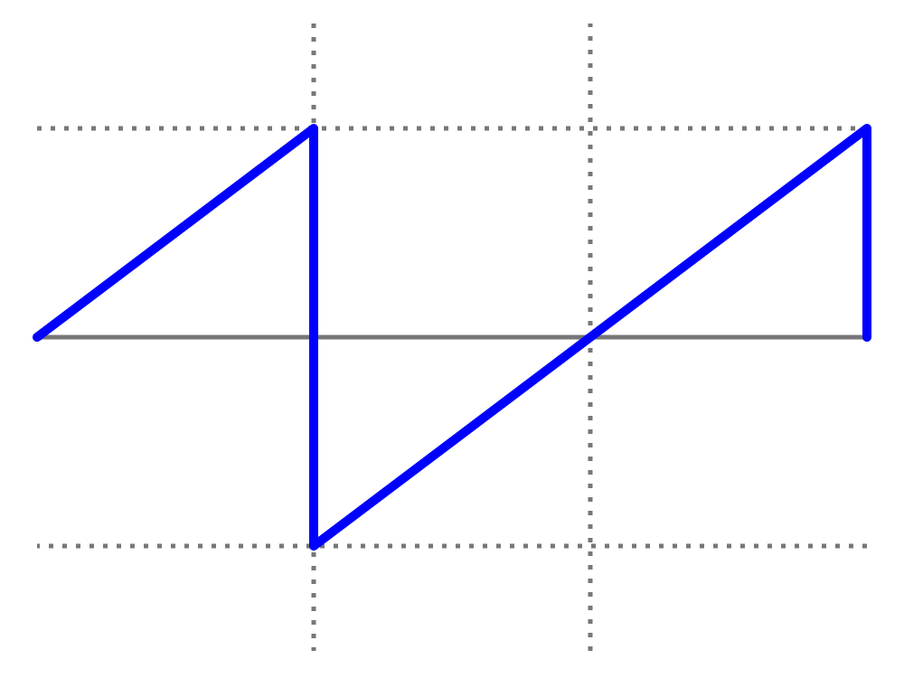
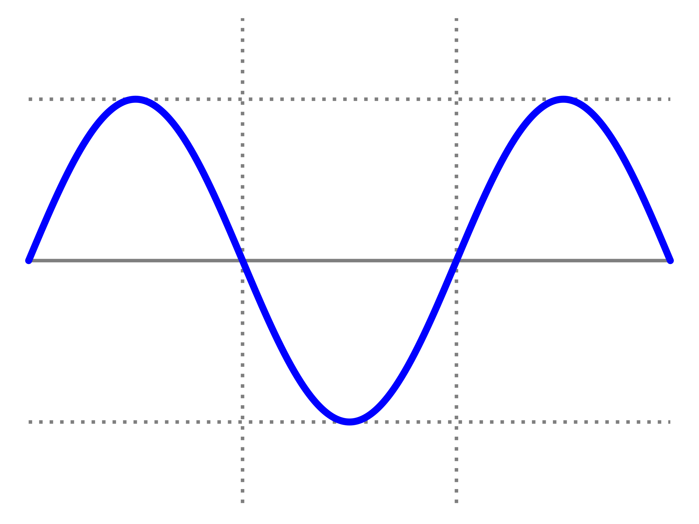

Sawtooth Wave
The sawtooth wave (or saw wave) is a kind of non-sinusoidal waveform. It is so named based on its resemblance to the teeth of a plain-toothed saw with a zero rake angle. A single sawtooth, or an intermittently triggered sawtooth, is called a ramp waveform. (more)

Sine Wave
A sine wave or sinusoid is a mathematical curve that describes a smooth periodic oscillation. A sine wave is a continuous wave. It is named after the function sine, of which it is the graph. It occurs often in both pure and applied mathematics, as well as physics, engineering, signal processing and many other fields. (more)